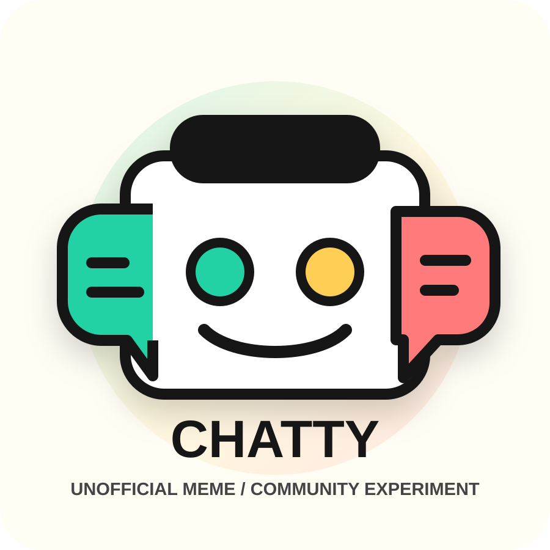

CHATTY
Small meme/community experiment by @nicdunz, built in public with AI assistance and plain disclosures.
Ticker: CHATTY
Chain: Solana
Status: unofficial
jSHyGRfqkGBKdjUPrZXaqPXzFpBTjimJtheWZJRpump

Current Snapshot
PriceUnavailable from free public snapshot
Market capUnavailable from free public snapshot
LiquidityUnavailable from free public snapshot
24h volumeUnavailable from free public snapshot
Unavailable means unavailable from the free read-only snapshot, not zero.
Snapshot timestamp: Snapshot unavailable. Metrics are volatile and may be stale.